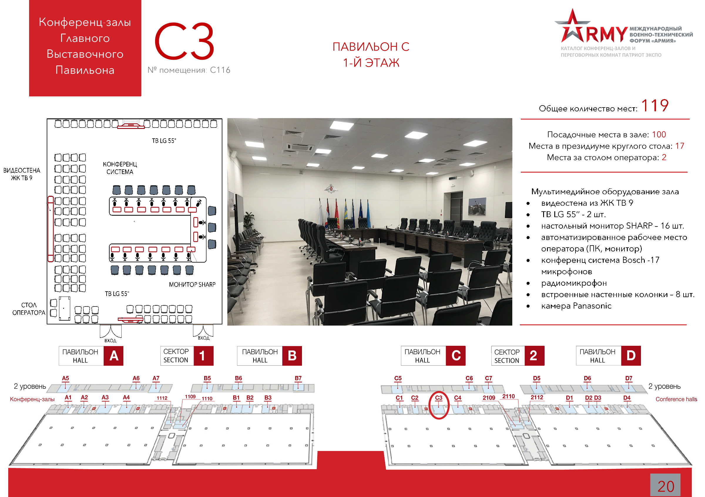

: 24.08.2020
: 13:30 - 15:00
: Конференц-зал C3
: ПАО "Промсвязьбанк"
: Руководитель проектов Щукина Елена Владимировна. Тел: +7 (495) 777-10-20 доб. 81-3011, e-mail: schukinaev@psbank.ru
Диверсификация должна стать одним из ведущих драйверов развития промышленности России. Перед руководством отечественной оборонной промышленностью поставлена задача по наращиванию доли гражданской продукции до 30 % к 2025 году и до 50 % к 2030 году. Это серьезная цель, которая требует от предприятий ОПК оперативной адаптации к рыночным условиям при планировании запуска новых линеек производства и реализации продукции гражданского назначения, в том числе в части поиска ценовой ниши и рынка сбыта.
Какие отрасли и технологии сегодня находятся в приоритете при реализации проектов диверсификации? Каковы перспективы расширения мер государственно-частного сотрудничества по линии акселерации проектов диверсификации? Как сформировать режим наибольшего благоприятствования для реализации проектов диверсификации и обеспечить востребованность российского продукта на внешних рынках? Каковы текущие и перспективные финансовые и нормативные механизмы государственной поддержки?
